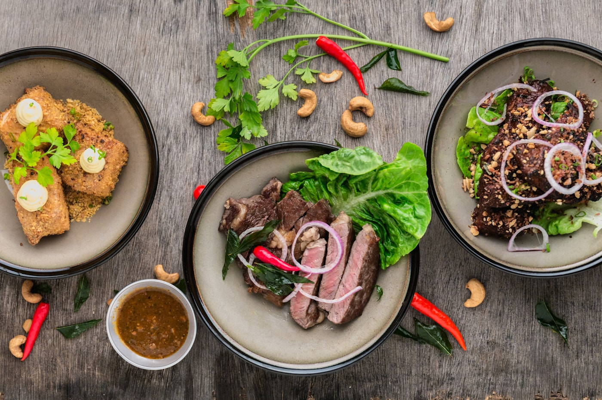

1. The Thermodynamics of Cookware in Stock Preparation
In the culinary arts, the material composition of your cookware is as influential as the ingredients inside it. When preparing a broth that will simmer for 10 to 14 hours, minor irregularities in thermal conductivity accumulate into major flavor consequences. Thin commercial stainless steel pots create localized hot spots directly above the flame, scorching delicate root sugars and clouding the broth with burnt particulate matter.
At Basil Broth Camp, we rely on two legendary culinary metals: heavy gauge (2.5 mm) French copper lined with pure tin, and dense enameled cast iron Dutch ovens and stockpots.
2. Thermal Conductivity Comparison Matrix
| Vessel Material | Thermal Conductivity (W/m·K) | Heat Retention Capacity | Ideal Broth Application |
|---|---|---|---|
| Solid French Copper (2.5mm) | 385 – 400 (Exceptional) | Rapid response to micro-adjustments | Delicate consommé, clarifying clear stocks, allium reductions |
| Enameled Cast Iron | 50 – 55 (Moderate / Uniform) | Unrivaled steady radiant heat retention | Overnight 14-hour root simmers, outdoor woodfire embers |
| Multi-Ply Stainless Steel | 15 – 20 (Poor) | Prone to center hotspot scorching | General boiling, water heating, quick blanching |
3. The Art of the Tin-Lined French Copper Stockpot
Copper conducts heat twenty times faster than stainless steel. Heat applied at the base travels up the sidewalls of the pot within seconds, creating a gentle 360-degree convection envelope around the simmering ingredients. Because pure copper is reactive with acidic foods, authentic French pots are lined with hand-wiped molten tin.
Tin provides a naturally non-stick, chemically inert surface that allows delicate alliums and sweet basil oils to release their pure flavor without metallic aftertaste.
4. The Power of Enameled Cast Iron for Long Embers
For overnight kitchen sessions and outdoor woodfire hearth cooking, enameled cast iron is king. Its heavy thermal mass acts like a heat reservoir, buffering the stock against sudden ambient temperature drops. The heavy, self-basting lid with interior condensation spikes ensures that rising steam condenses and drips continuously back into the broth, maintaining a closed-loop hydration cycle.
5. Geometry of the Vessel: Tall Stockpot vs Wide Rondeau
The aspect ratio of the pot governs evaporation rates. A tall, narrow stockpot minimizes surface area, reducing water loss during long 14-hour extractions and keeping all ingredients submerged. Conversely, a wide, shallow rondeau maximizes evaporation, making it the superior choice when concentrating a finished stock into a potent botanical glaze.
6. Maintaining and Caring for Artisan Cookware
- Copper Care: Clean copper exteriors with a natural paste of coarse sea salt, lemon juice, and white flour. Never use abrasive metal scrubbers on delicate tin interiors.
- Tin Longevity: Use exclusively wooden or silicone spoons. Tin melts at 232°C, so never pre-heat a dry copper pan over high flames without liquid.
- Enameled Iron: Allow vessels to cool completely to room temperature before washing with warm water and castile soap to prevent thermal shock micro-cracks in the enamel glaze.
7. Retinning Heritage Copper Cookware
Unlike disposable non-stick cookware coated with synthetic chemical polymers, a heavy copper pot is an heirloom intended to last centuries. When the internal tin lining eventually wears thin after 15 to 20 years of active kitchen use, master coppersmiths can easily re-wipe a fresh layer of pure molten tin, restoring the pot to brand-new performance.
8. Frequently Asked Questions on Culinary Hardware
9. Conclusion
Committing to artisanal copper and enameled iron cookware is a commitment to generations of culinary excellence. When high-grade metals work in harmony with slow heat and fresh garden herbs, every bowl of broth becomes a masterpiece of flavor.
10. Thermal Equilibrium and Convection Mechanics in Copper Stockpots
The physics of fluid dynamics inside a stockpot dictate how thoroughly flavors are extracted from whole vegetables. In a high-conductivity 2.5 mm French copper vessel, heat spreads effortlessly from the burner across the base and up the curved walls. This creates gentle toroidal convection currents—liquid rises smoothly along the hot outer walls and descends through the cooler center of the pot.
This steady, natural fluid circulation gently washes across vegetable chunks without violent bubbling, continuously drawing out water-soluble minerals without breaking apart tender root structures.
11. Ergonomics, Riveting, and Forged Bronze Handles
A full 12-quart copper stockpot filled with broth and root vegetables weighs in excess of 15 kilograms. Authentic artisan cookware features heavy forged yellow bronze or cast-iron handles secured with three thick, hand-hammered copper rivets. Unlike spot-welded industrial handles that can fail under thermal stress, hand-riveted handles provide absolute structural safety when transferring boiling pots between hearth embers and indoor prep counters.
12. Choosing the Right Pot Dimensions for Your Simmering Goals
When selecting cookware for artisanal broth craft, consider the ratio of diameter to height:
- The Classical Marmite (1:1 Ratio): Equal height and diameter. The ideal all-around vessel for 8 to 12 hour vegetable and herb stocks.
- The High Stockpot (1.5:1 Height Ratio): Tall and slender. Maximizes ingredient immersion while minimizing evaporation during 14+ hour overnight simmers.
- The Braiser / Sauteuse (0.5:1 Height Ratio): Wide surface area. Engineered for reducing strained stocks into dense, spoon-coating culinary glazes.
13. Induction Cooking vs Gas Flames with Heavy Metal Cookware
While traditionalists favor open blue gas flames for heating French copper stockpots, modern commercial induction stoves offer millimeter precision when paired with magnetic-core copper cookware or enameled cast iron. Induction technology transfers electromagnetic energy directly into the iron or steel core of the pot without heating surrounding ambient kitchen air.
This allows camp chefs to maintain an exact 88.5°C sub-boil simmer for 14 continuous hours with minimal ambient humidity loss and zero risk of exterior flame scorching.
14. The Ecological Footprint of Heritage Cookware
In contrast to synthetic non-stick pans that end up in landfills every few years, heavy copper and cast iron are 100% recyclable, non-toxic, and indestructible. Using heritage metals aligns directly with slow food principles by honoring materials that outlive the chefs who cook with them.
15. The Culinary Legacy of Artisan Metal Vessels
A hand-hammered French copper stockpot or vintage enameled cast-iron Dutch oven carries an aura of timeless kitchen devotion. With each gentle 14-hour extraction of fresh basil and caramelized alliums, these heavy vessels deepen your connection to slow food craftsmanship, ensuring that everyday cooking remains an inspiring, nourishing art form.